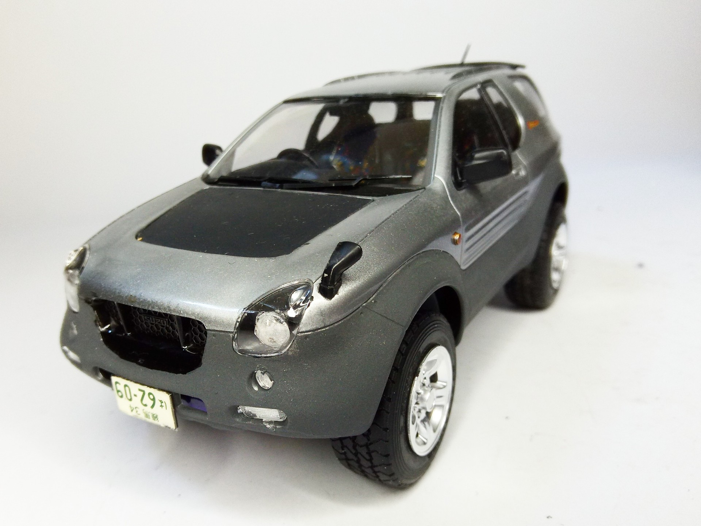
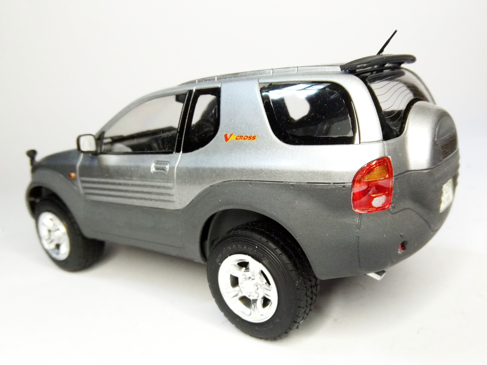

Auto e veicoli stradali · scale model archive
Isuzu Vehicross
Isuzu Vehicross — Kit: Tamiya, Scale: 1(24. Incrediby advanced and personal style, actually series produced. However, 2-door SUVs are not popular. More…

Photo gallery

English description
Incrediby advanced and personal style, actually series produced. However, 2-door SUVs are not popular.
More info at: https://www.youtube.com/watch?v=ZOszin9227Q&t=17s&ab_channel=DougDeMuro
#1/24 #Tamiya #Isuzu #Vehicross
Descrizione italiana
Stile incredibilmente avanzato e personale, eppure effettivamente prodotto in serie. Tuttavia, i SUV a due porte non sono molto popolari. Maggiori informazioni: https://www.youtube.com/watch?v=ZOszin9227Q&t=17s&ab_channel=DougDeMuro